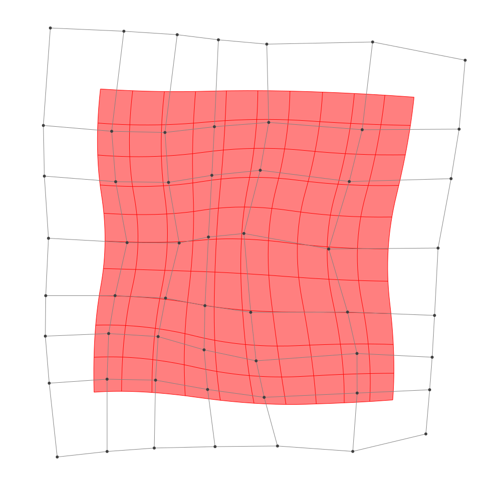
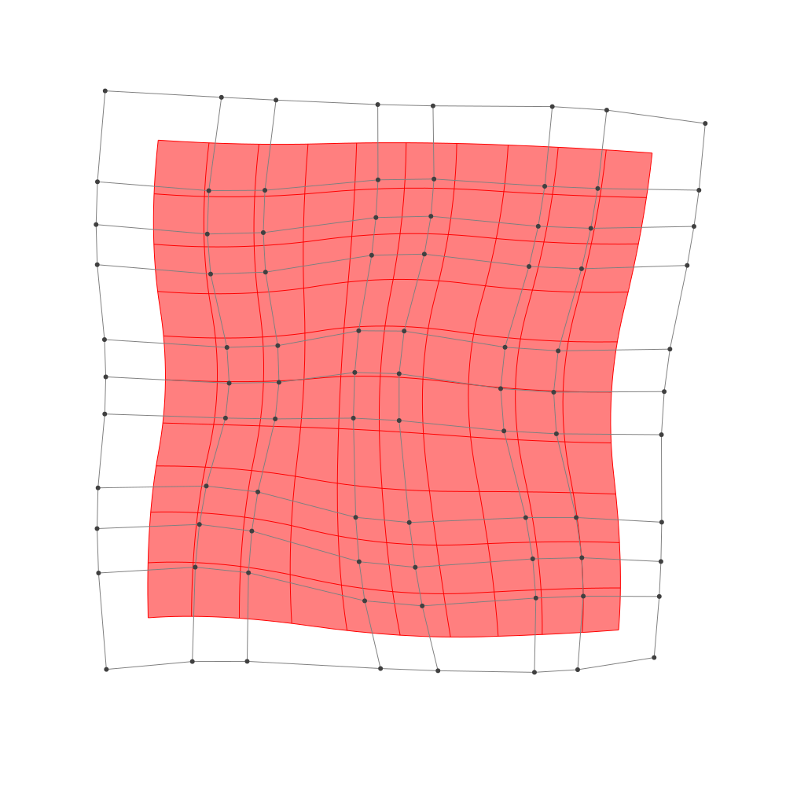

Refinement
BasicBSpline.refinement — FunctionRefinement of B-spline manifold with given B-spline spaces.
julia> p = 2 # degree of polynomial2julia> k = KnotVector(1:8) # knot vectorKnotVector([1.0, 2.0, 3.0, 4.0, 5.0, 6.0, 7.0, 8.0])julia> P = BSplineSpace{p}(k) # B-spline spaceBSplineSpace{2, Float64}(KnotVector([1.0, 2.0, 3.0, 4.0, 5.0, 6.0, 7.0, 8.0]))julia> rand_a = [SVector(rand(), rand()) for i in 1:dim(P), j in 1:dim(P)]5×5 Matrix{StaticArrays.SVector{2, Float64}}: [0.646962, 0.342147] [0.379493, 0.807486] … [0.508935, 0.93903] [0.184659, 0.512028] [0.327263, 0.899375] [0.775894, 0.83889] [0.893376, 0.574197] [0.382365, 0.163966] [0.610448, 0.610649] [0.569859, 0.453727] [0.715889, 0.403669] [0.967376, 0.658705] [0.0337595, 0.80393] [0.161227, 0.279181] [0.822035, 0.293205]julia> a = [SVector(2*i-6.5, 2*j-6.5) for i in 1:dim(P), j in 1:dim(P)] + rand_a # random5×5 Matrix{StaticArrays.SVector{2, Float64}}: [-3.85304, -4.15785] [-4.12051, -1.69251] … [-3.99107, 4.43903] [-2.31534, -3.98797] [-2.17274, -1.60062] [-1.72411, 4.33889] [0.393376, -3.9258] [-0.117635, -2.33603] [0.110448, 4.11065] [2.06986, -4.04627] [2.21589, -2.09633] [2.46738, 4.1587] [3.53376, -3.69607] [3.66123, -2.22082] [4.32204, 3.79321]julia> M = BSplineManifold(a,(P,P)) # Define B-spline manifoldBSplineManifold{2, (2, 2), StaticArrays.SVector{2, Float64}, Tuple{BSplineSpace{2, Float64}, BSplineSpace{2, Float64}}}((BSplineSpace{2, Float64}(KnotVector([1.0, 2.0, 3.0, 4.0, 5.0, 6.0, 7.0, 8.0])), BSplineSpace{2, Float64}(KnotVector([1.0, 2.0, 3.0, 4.0, 5.0, 6.0, 7.0, 8.0]))), StaticArrays.SVector{2, Float64}[[-3.853038356492494, -4.1578530041314465] [-4.120507485670829, -1.6925141267742077] … [-4.155635720302952, 2.141203214948643] [-3.9910652946711584, 4.4390295918438065]; [-2.3153405646383765, -3.987972153424724] [-2.172736907772552, -1.600624514105888] … [-2.0776822855704618, 1.947960347887116] [-1.724106089512975, 4.3388900992093085]; … ; [2.069859340960943, -4.046273314061583] [2.2158889013392997, -2.0963313534544517] … [2.2214655512149415, 2.089927486917741] [2.467376409718039, 4.158704510862722]; [3.5337595357829352, -3.69607031154204] [3.6612271582866347, -2.2208192322301397] … [4.178953234762407, 2.1685118839611714] [4.322035101903501, 3.7932051378482488]])
h-refinemnet
Insert additional knots to knot vector.
julia> k₊=(KnotVector(3.3,4.2),KnotVector(3.8,3.2,5.3)) # additional knotvectors(KnotVector([3.3, 4.2]), KnotVector([3.2, 3.8, 5.3]))julia> M_h = refinement(M,k₊=k₊) # refinement of B-spline manifoldBSplineManifold{2, (2, 2), StaticArrays.SVector{2, Float64}, Tuple{BSplineSpace{2, Float64}, BSplineSpace{2, Float64}}}((BSplineSpace{2, Float64}(KnotVector([1.0, 2.0, 3.0, 3.3, 4.0, 4.2, 5.0, 6.0, 7.0, 8.0])), BSplineSpace{2, Float64}(KnotVector([1.0, 2.0, 3.0, 3.2, 3.8, 4.0, 5.0, 5.3, 6.0, 7.0, 8.0]))), StaticArrays.SVector{2, Float64}[[-3.853038356492494, -4.1578530041314465] [-4.013519833999495, -2.678649677717103] … [-4.130950156458183, 2.485877171482917] [-3.9910652946711584, 4.4390295918438065]; [-2.8535347917873177, -4.047430451172077] [-2.8540878827370966, -2.5986437075927102] … [-2.761852361265559, 2.3693468868995597] [-2.517541811318339, 4.373938921631383]; … ; [2.069859340960943, -4.046273314061583] [2.1574770771879574, -2.876308137697304] … [2.258352179990406, 2.400244040509488] [2.467376409718039, 4.158704510862722]; [3.5337595357829352, -3.69607031154204] [3.610240109285155, -2.8109196639548997] … [4.200415514833571, 2.412215872044233] [4.322035101903501, 3.7932051378482488]])julia> save_png("2dim_h-refinement.png", M_h) # save image

Note that this shape and the last shape are identical.
p-refinemnet
Increase the polynomial degree of B-spline manifold.
julia> p₊=(1,2) # additional degrees(1, 2)julia> M_p = refinement(M,p₊=p₊) # refinement of B-spline manifoldBSplineManifold{2, (3, 4), StaticArrays.SVector{2, Float64}, Tuple{BSplineSpace{3, Float64}, BSplineSpace{4, Float64}}}((BSplineSpace{3, Float64}(KnotVector([1.0, 2.0, 3.0, 3.0, 4.0, 4.0, 5.0, 5.0, 6.0, 6.0, 7.0, 8.0])), BSplineSpace{4, Float64}(KnotVector([1.0, 2.0, 3.0, 3.0, 3.0, 4.0, 4.0, 4.0, 5.0, 5.0, 5.0, 6.0, 6.0, 6.0, 7.0, 8.0]))), StaticArrays.SVector{2, Float64}[[-3.6465363073928865, -3.5164544445926174] [-3.7460981398117053, -2.2902842757505306] … [-3.760292301005185, 2.6873319719299724] [-3.6622566073204803, 3.8440037749131397]; [-2.5530589818161147, -3.416199083794536] [-2.5159298855535472, -2.2160259942985836] … [-2.3434890494459086, 2.5740206229601257] [-2.182451432285973, 3.761726884085636]; … ; [2.349576682781088, -3.5201994435438455] [2.4210446348140438, -2.584786036681548] … [2.6049066717918765, 2.6017156519921456] [2.719293018429925, 3.599097183126477]; [3.322416489683307, -3.3658459220800223] [3.3876971290913764, -2.588662808982801] … [3.8927602955965197, 2.5800912883447817] [3.9728703117805675, 3.429444896126479]])julia> save_png("2dim_p-refinement.png", M_p) # save image

Note that this shape and the last shape are identical.